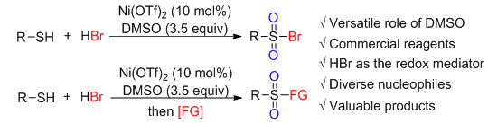

M.S. Candidate, Peking university
Email:
wanghongye2000@pku.edu.cn
Tel:
0086-13051709566
Address:
Xue Yuan Rd.38, Haidian District, Beijing, China
During my graduate studies supervised by Prof. Song Song, my research mainly focused on organocatalytic deoxyhalogenation of alcohols and oxidative functionalization of thiols with DMSO/HBr. Details of my research are shown below:
Appeal reaction is a widely-used transformation from alcohols to organic halides, but stoichiometric phosphorous compounds and organic halogenating reagents are indispensable in this classical reaction. We leveraged a P(V) catalyst first developed by the Denton group to achieve this transformation with inorganic halides. This catalyst facilitated the deoxyhalogenation process and could be circulated under high temperatures. We discovered that the addition of catalytic Brønsted acid was vital to the transformation and NH4X appeared to be the only appropriate halogen source. Modifications to the catalyst were also conducted.
Sulfonyl derivatives have myriad applications in pharmaceuticals, agrochemicals, and materials. The transformation from thiols to sulfonyl derivatives features the thiol motif coupling with a nucleophile with two oxygen atoms introduced to the sulfur center. We assumed that DMSO could serve as both an oxygen source and a mild oxidant in this transformation, while HBr could transfer oxygen atoms to products. We herein reported a Ni(OTf)2 catalyzed oxidative bromination of thiols with DMSO/HBr to afford sulfonyl bromides. HBr was oxidized by DMSO to afford DMS•Br2 and other oxidative species in situ, which then reacted with thiols to afford sulfonyl bromides. Synthesis of other sulfonyl derivatives was also achieved by a one-pot procedure with the addition of nucleophiles.
